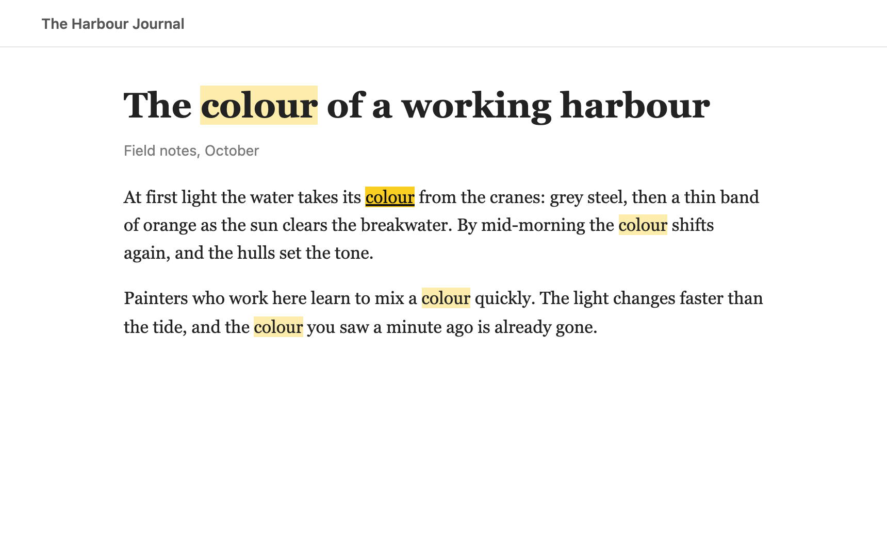
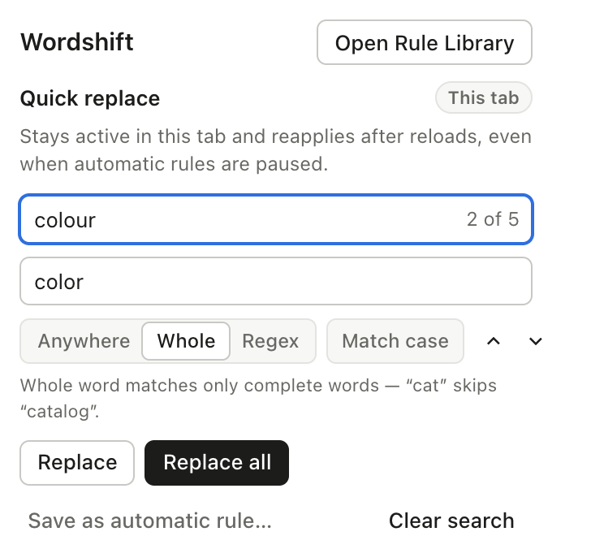
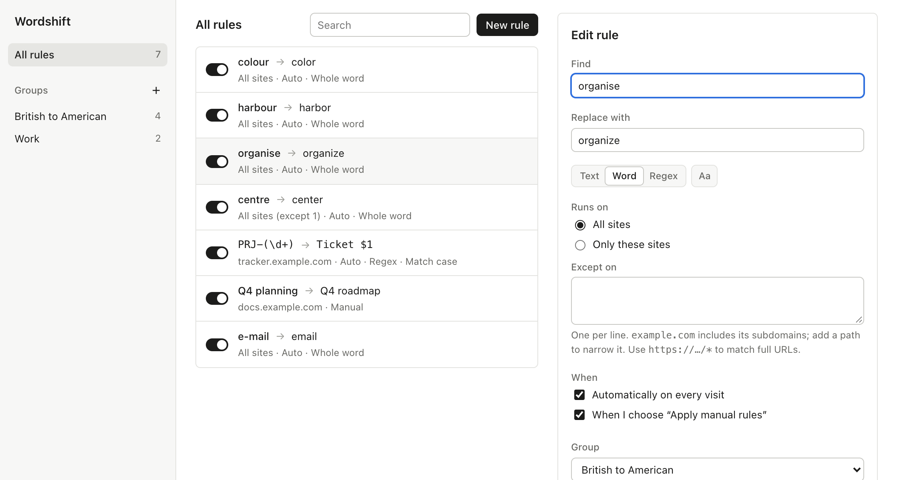

Browser extension for Firefox and Chromium
Change the words on any web page.
Wordshift finds and replaces text on the sites you read, once or on every visit. It changes only the visible text, leaves the page working as it was, and can undo every change.
Two ways to use it
Make a one-off change from the toolbar, or save it as a rule that runs every time a page loads.


Quick Replace
Open it from the toolbar. Matches are highlighted on the page as you type, with a running count. Step through them, replace one or all, and undo if the result is not what you wanted.
Highlights disappear when the popup closes. Nothing on the page changes until you choose Replace.

Rules
Save a replacement as a rule and Wordshift applies it on every visit, including text that arrives later, such as new comments or an infinite-scroll feed.
The Rule Library keeps rules in groups you can switch on and off, and each rule has a test box to try it on sample text before saving.
What a rule can do
Each rule has a find pattern, a replacement, the sites it runs on, and when it runs.
- Three ways to match
-
Plain text, whole words only, or a regular expression. Regex replacements can reuse captured text with
$1,$<name>and$&. - Sites you choose
-
example.comcovers the site and its subdomains. Add a path to narrow it, or list sites to skip. Full URL patterns with*are supported. - Automatic or on request
- Run a rule on every visit, only when you choose Apply manual rules, or both. Pages that keep loading content are followed as they change.
- Undo and pause
- Every Quick Replace step can be undone. Pausing a site from the toolbar puts its original text back straight away.
- Groups
- Collect related rules, such as spelling conventions or work terms, and switch them on or off together.
- Import and export
- Rules export to a JSON file for backup or another computer. Imports show a report before anything is saved.
What it changes, and what it leaves alone
Wordshift edits text and nothing else, so pages keep working: buttons, forms, video players and web apps behave as they did before.
Changes
- Visible text on the page, including text inside web components
- The page title shown in the tab, when an automatic rule matches it
Leaves alone
- Scripts, styles and the structure of the page
- Form fields, and anything you are typing or editing
- Text a page keeps putting back: after a few attempts Wordshift stops, rather than fighting the page
- Code: rules are text patterns and never run as programs
Your data
- Rules and settings are saved in your browser's extension storage and nowhere else
- Wordshift has no server, makes no network requests, and never sends page content or rules anywhere
- Export creates a file on your computer; import reads one. Nothing is uploaded
- Site access is used only to read and change text on pages you allowed; remove it at any time in Settings
| Permission | When | Why |
|---|---|---|
storage |
At install | Saves your rules and settings on this device. |
activeTab |
At install | Lets Quick Replace work on the tab you are viewing, and only after you open it. |
scripting |
At install | Places Wordshift's text-replacement script on that tab. |
| Site access | Only when needed | Requested for the sites an automatic rule covers, when you turn the rule on. It can be removed at any time in Settings. |
Moving from FoxReplace
Wordshift reads FoxReplace export files, so an existing list can come across in a few minutes.
-
Export from FoxReplace
In FoxReplace, open Options and choose Export. This saves your list as a JSON file.
-
Import into Wordshift
In the Rule Library, choose Import and pick the file. A report lists how many rules will be added before anything is saved.
-
Review flagged rules
Rules that used JavaScript functions or HTML mode arrive switched off under Needs review, with their original settings shown, because Wordshift does not run code or rewrite HTML.
Wordshift is an independent project and is not affiliated with FoxReplace.
Keyboard shortcuts
The two toolbar shortcuts can be changed in your browser's extension shortcut settings.
- Open Quick Replace
- Alt Shift F
- Apply manual rules to this page
- Alt Shift R
- Next match, previous match
- Enter / Shift Enter
- Replace the current match
- Enter in Replace
- Replace all matches
- Ctrl or Cmd Enter
- Close
- Esc